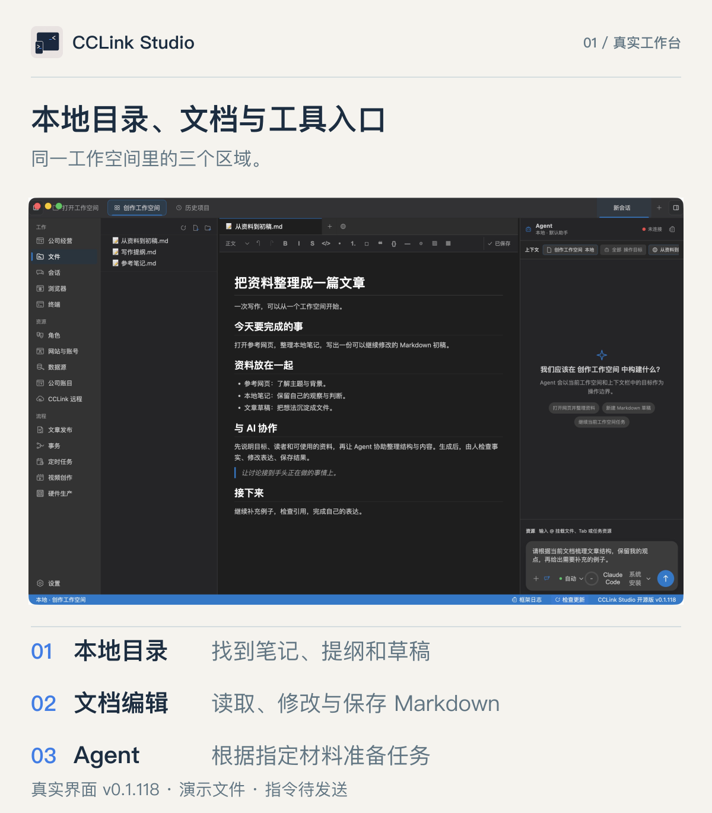
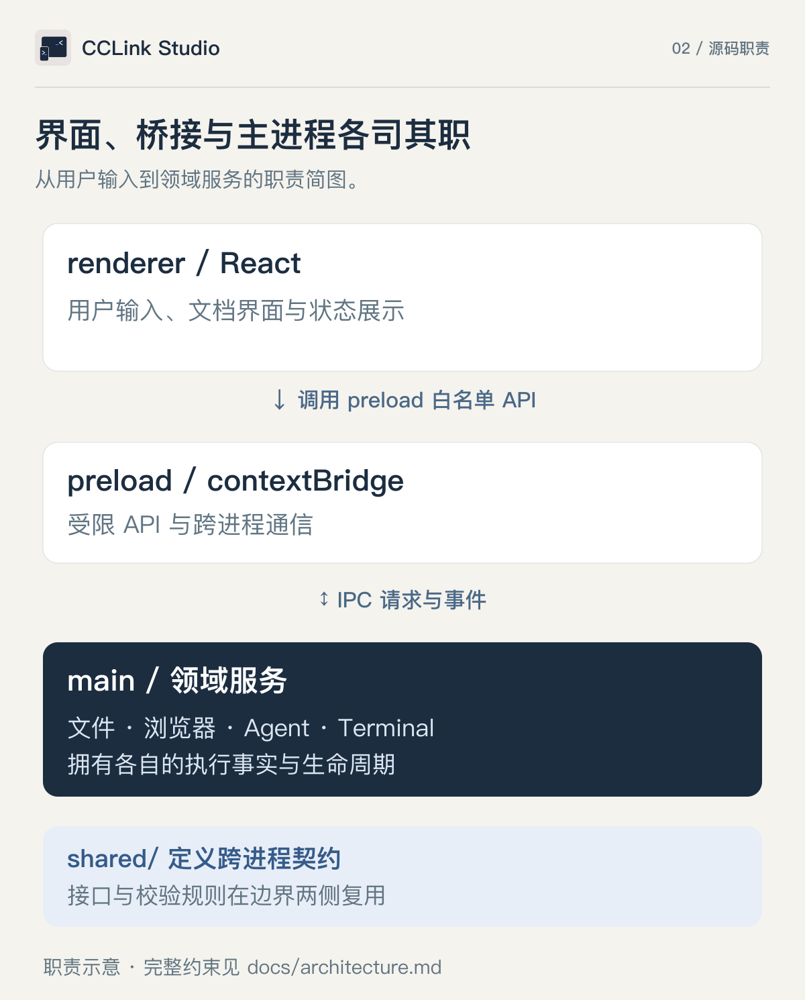
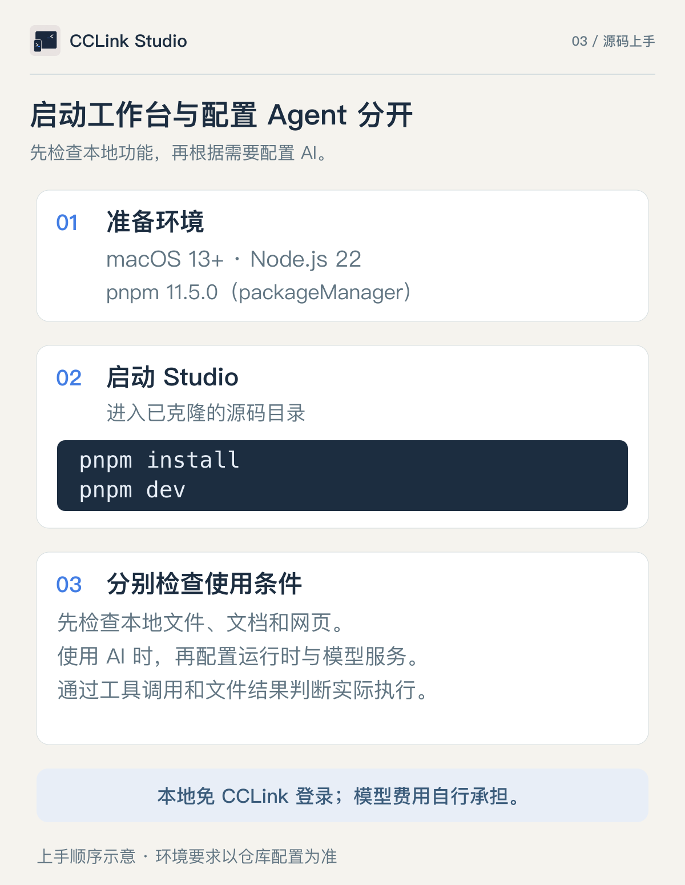

CCLink Studio：连接文件、网页与 Agent 的开源桌面工作台

CCLink Studio 是一款开源、本地优先的 AI 桌面工作台，当前面向 macOS。它把本地目录、内嵌浏览器、Markdown 编辑、终端和 Agent 会话组织在同一个工作空间里。
我们希望让网页资料、本地文档和工具操作更容易配合使用：打开一份材料，在工作台里查看和修改，再根据需要交给 Agent 协助处理。内容创作者可以用它整理资料和写作，开发者也可以把文档、终端与 AI 协作放在一起。
本地能力免费，免 CCLink 账号登录。AI 模型账号、API 和调用费用由用户自行配置和承担；CCLink 远程服务通过独立入口按需登录使用。
当前可以做什么
| 能力 | 可以做的事 |
|---|---|
| 本地工作空间 | 打开本地目录，管理文件，保存相应的标签页、草稿与会话状态 |
| Markdown 文档 | 可视化编辑、手动保存；配置 Agent 后，通过工具读取、写入和追加指定文档 |
| 内嵌浏览器 | 在应用中浏览网页；Agent 可在授权范围内使用 Playwright 工具操作可见页面，用户可以中断和接管 |
| 本地 Agent | 当前完整工具 Agent 使用 Claude Code 后端，提供流式输出、工具调用、权限确认和会话管理 |
| 本地终端 | 在工作台内使用本地 shell，运行命令并查看输出 |

真实开发版界面（v0.1.118），使用演示文件；右侧指令尚未发送。
此外，数据源提供 Elasticsearch 只读查询入口，需要配置自己的连接；Android 连接面向用户自有 USB 或 Wi-Fi ADB 真机，需要本机已有 adb 和可连接设备。这两类能力按环境使用，不是启动工作台的前置条件。
技术栈与源码职责
桌面层使用 Electron，界面采用 React 与 TypeScript，状态管理使用 Zustand。文档编辑基于 Tiptap／ProseMirror，浏览器自动化通过 Playwright over CDP 接入。
renderer 负责界面与用户交互，经 preload 的受限 API 发起操作；文件、浏览器、Agent 和终端的运行事实由主进程中的相应服务拥有，跨进程契约集中在 shared/。

源码职责简图。完整的状态所有权、权限与生命周期约束见仓库架构说明。
如果准备参与实现，先读 架构说明 与 开发指南。新功能应接入现有服务与契约，保持能力独立降级，并明确操作范围和人工确认点。
从源码启动
当前桌面目标为 macOS 13+。仓库 CI 使用 Node.js 22，package.json 的 packageManager 指定 pnpm@11.5.0。准备好相应工具后，在终端执行：
git clone https://github.com/AwsomeName/cclink-studio.git
cd cclink-studio
pnpm install
pnpm dev
启动后，可以先打开本地文件夹，查看文件、编辑 Markdown 或浏览网页。这些本地操作无需登录 CCLink。
使用 Agent 时，在“设置 > Agent”选择运行时，再按支持的方式配置认证或模型服务。本机或自定义 Claude Code 可以使用自身认证，Studio 内置 Runtime 则使用用户在 Studio 中配置的 Provider API Key。运行时可用与模型服务可用需要分别检查。

上手顺序示意：先验证本地功能，再按需要配置 Agent。环境要求以仓库配置为准。
后续版本的环境要求以仓库 CI 与 package.json 为准；安装、启动和 Agent 配置遇到问题时，可以先对照 README 与开发指南排查。
第一次可以怎样试
先用一份可公开的演示材料完成本地流程，再根据需要配置 Agent，便于分清问题发生在哪一层。
- 打开本地文件夹，载入一个 Markdown 文件，修改一段文字并手动保存，再打开文件确认修改已经落盘。
- 在内嵌浏览器中打开参考网页，来回切换网页与文档标签，检查材料和草稿是否都能继续使用。
- 配置好 Agent 后，提供目标文档并提出一项小任务，例如整理提纲。查看实际工具调用，再回读目标文件，确认结果和保存状态。
涉及网页操作时，保留明确的页面、账号与任务范围。登录、验证码和其他需要人工参与的环节由人处理，站点条件可能影响执行结果。
欢迎参与改进
最有帮助的反馈，是一个能复现的问题：使用的系统和版本、操作步骤、预期结果、实际现象，以及脱敏后的诊断信息。可以从资料整理、Markdown 编辑、网页操作或本地开发辅助中的具体卡点开始。
如果准备贡献代码，较大的功能或边界调整先通过 Issue 讨论，提交时围绕一个清楚的问题说明触发条件、改动行为和验证结果。按仓库要求执行质量门禁，涉及用户流程的改动还应检查真实应用中的结果。
项目采用 GPL-3.0-only 许可证。欢迎试用、复现问题、完善文档和提交改进，一起把这个本地工作台做好。
项目：GitHub CCLink Studio · 问题与建议：GitHub Issues